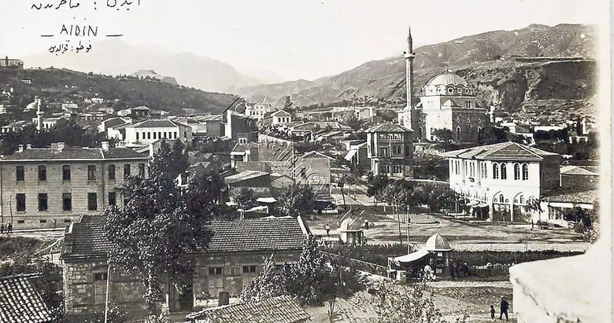

Aydın
Türkiye’nin batısında yer alan illerimizden birisi olan Aydın ili, ülkemizin Ege Bölgesinde yer almaktadır.

Aydın Tarihi
Hititlerden başka Spartalılar ve Perslere de ev sahipliği de yapmıştır. Ardından Büyük İskender hakimiyeti altına girmiştir. Roma İmparatorluğuna da ev sahipliği yapan Aydın tarih boyunca birçok isimle anılmıştır.
Aydın’da Ne Yenir ?
Köklü tarihi, efeleri, inciri, zeytini, temiz havası ve birbirinden lezzetli yemekleri ile tanınması gereken illerin başında gelmektedir.